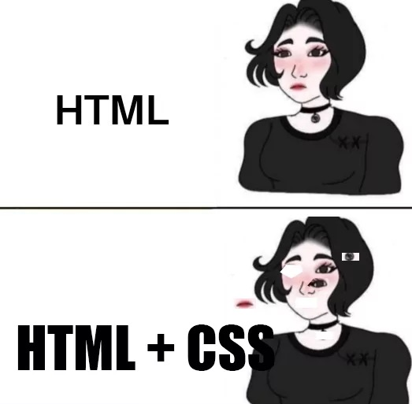
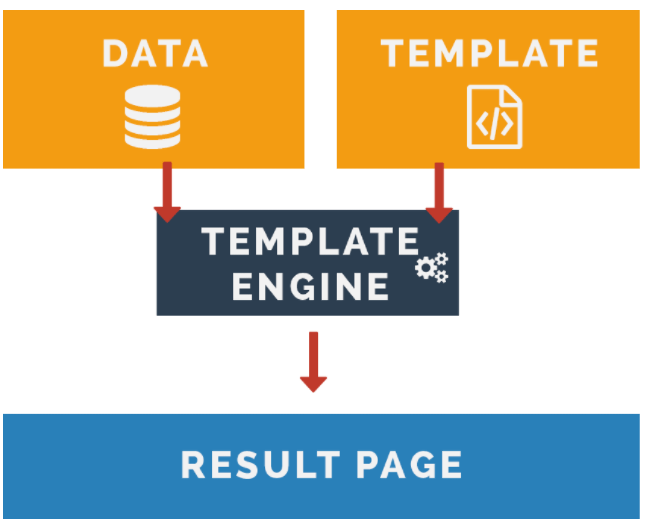
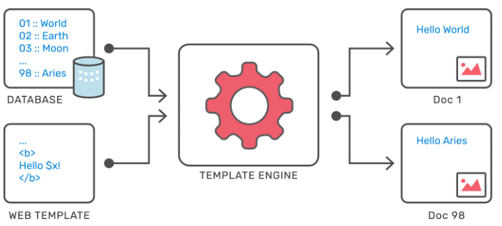
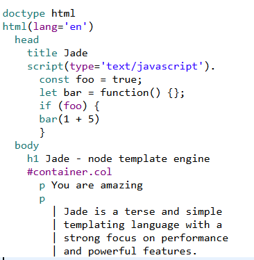
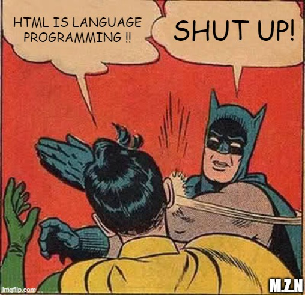

NPM (Node Package Manager) - це платформа та менеджер пакетів, які використовуються для розробки програм мовою програмування JavaScript і середовищі виконання Node.js. NPM дозволяє розробникам легко управляти залежностями (бібліотеками та модулями), які використовуються в їхніх проєктах.
Щоб установити пакет глобально,
скористайтеся цією командою:
npm install -g [package-name]
node -v, npm -v
npm init
npm init -y для швидкого створення з налаштуваннями
за
замовчуванням.
npm install package-namenpm install package-name@version
npm install -g package-namenpm install (або npm i)npm install назва_пакетуnpm install -D назва_пакетуnpm update назва_пакетуnpm uninstall назва_пакетуnpm run назва_скриптуnpx назва_пакетуnpm list -gnpm cache verify, npm cache clean --forceКоли ми встановлюємо пакети, node_modules створюється директорія, де ми можемо бачити інші директорії, а саме директорію та директорії кожного пакета. Ви можете запитати, чому ці інші директорії там є, якщо ви їх не встановлювали.
У вашому файлі package.json ваші пакети перелічені в розділі залежностей, оскільки ваш проект «залежить» від цих пакетів для виконання роботи.
Додаткові директорії, створені у вашій node_modules директорії, – це інші, додаткові пакети, від яких залежать встановлені вами пакети для забезпечення найкращої функціональності. Ви можете легко перевірити це, переглянувши файл package.json встановленого пакета, щоб побачити його залежності.
npm install --save-dev або
-D)
У Node Package Manager (NPM) версії записуються за стандартом Semantic Versioning, і версії, такі як "^5.1.0", вказують певний діапазон сумісності. Основні частини семантичного версіонування. Формат версій виглядає як MAJOR.MINOR.PATCH:
Значення символів у версіях
Приклади
Навіщо це потрібно?
Використання таких символів забезпечує баланс між стабільністю та можливістю отримувати оновлення, сумісні з вашим проєктом.
Шаблонізатор (template engine, template parser) - це інструмент (програмне забезпечення або бібліотека), призначене для змішування (об'єднання) шаблонів з моделлю даних для створення результуючих документів.

Простими словами, template engine - це механізм, який дозволяє використовувати статичні файлі шаблонів у вашому застосунку. Template engine замінює змінні всередині файлу вебшаблона фактичними значеннями (під час виконання), і перетворює шаблон в HTML-файл, який надсилається клієнту з динамічними даними.
Ця техніка полегшує оформлення HTML-сторінки. З наведеної діаграми зрозуміло функціональність шаблонізаторів, тобто як дані з бази даних відображаються на HTML-сторінці динамічно

Приклади популярних шаблонізаторів
Pug в Node.js (2016) (раніше відомий як Jade: 2012 - 2016) - це двигун шаблонів, який використовує регістрозалежний синтаксис для створення HTML. Іншими словами, він повертає рядок HTML, відтворений згідно з даними, визначеними у файлі Pug. Можна сказати, що Pug - це посередник, який виконує завдання перетворення введених даних та перекладу їх у синтаксис HTML.
Перейменування в Pug (2016): У 2016 році було прийнято рішення про зміну назви з "Jade" на "Pug". Ця зміна назви сталася через конфлікт із зареєстрованою торговою маркою "Jade" і викликану патентно-правовою домовленістю. Отже проєкт перейменували на "Pug", причому синтаксис та функціональність залишилися практично незмінними.

Перед тим як приступити до роботи з шаблонізатором Pug, нам потрібно зрозуміти, як відбувається компіляція шаблонів Pug у звичний для нас HTML. Браузер не розуміє формату Pug, а отже, вся обробка коду повинна відбуватись або в нас на localhost, або на сервері.
На офіційному сайті документації Pug
ми можемо побачити використання
команди менеджера пакетів (npm install pug) та
залежностей npm, що автоматично
встановлюється разом з Node.js.
Коли мова йде про базовий синтаксис Pug, центральна роль відведена індентації (відступам) та ефективності. На відміну від HTML, де вкладеність реалізується за допомогою відкриваючих та закриваючих тегів, в Pug це здійснюється за допомогою індентації — це коли вкладені елементи розташовані праворуч від батьківських, створюючи зрозумілу структуру на подобі дерева. Цей принцип часто порівнюють із мовою Python, де відступи та індентація також відіграють ключову роль в блоках коду.
Завдяки цьому вам не потрібно турбуватися про закриваючі теги, які можуть «розгубитися» в купі коду, особливо в великих проєктах.
Крім того, виразність індентації дозволяє швидко ідентифікувати глибину вкладеності елементів, що може бути край корисним при швидкому ревью коду або його рефакторингу.
Pug:
doctype html
html(lang="uk")
head
title Моя сторінка
body
header.header
h1.header__title Привіт, Pug!
p Текст в одному рядку з тегом
p
| Довгий текст можна
| писати з символом |
Результат (HTML):
<!DOCTYPE html>
<html lang="uk">
<head>
<title>Моя сторінка</title>
</head>
<body>
<header class="header">
<h1 class="header__title">Привіт, Pug!</h1>
</header>
<p>Текст в одному рядку з тегом</p>
<p>
Довгий текст можна
писати з символом |
</p>
</body>
</html>
Вкладеність - лише відступами (пробіли або таби, не змішувати). Закриваючих тегів немає.
Pug:
a.link(href="/about" target="_blank") Про нас
input#email(type="email" required)
.card.card--new
button(class=["btn", "btn--primary"]) OK
- const isActive = true
li(class={active: isActive}) Пункт
Результат (HTML):
<a class="link" href="/about" target="_blank">Про нас</a>
<input id="email" type="email" required>
<div class="card card--new"></div>
<button class="btn btn--primary">OK</button>
<li class="active">Пункт</li>
.class і #id записуються одразу після тегу; без тегу - створюється
div.
required) виводяться коротко, якщо в шаблоні є doctype html.Pug:
- const user = { name: 'Олена', role: 'admin' }
- const links = ['Головна', 'Блог']
h1= user.name
p Вітаємо, #{user.name}!
p Посилань: #{links.length}
p= `Роль: ${user.role}`
//- коментар Pug: не потрапить у HTML
// звичайний HTML-коментар
Результат (HTML):
<h1>Олена</h1>
<p>Вітаємо, Олена!</p>
<p>Посилань: 2</p>
<p>Роль: admin</p>
<!-- звичайний HTML-коментар-->
- - рядок JavaScript-коду (не виводиться); = - вивести значення виразу.#{...} - інтерполяція з екрануванням HTML; !{...} та != - без
екранування
(небезпечно для даних від користувача).
Pug:
- const user = { isAdmin: false, plan: 'pro' }
if user.isAdmin
a(href="/admin") Адмінка
else
p Звичайний користувач
case user.plan
when 'free'
p Безкоштовний тариф
when 'pro'
p Тариф Pro
default
p Невідомий тариф
Результат (HTML):
<p>Звичайний користувач</p>
<p>Тариф Pro</p>
else if та unless (заперечення if).case - аналог switch у JavaScript.Pug:
- const menu = ['Головна', 'Блог', 'Контакти']
ul.menu
each item, i in menu
li.menu__item #{i + 1}. #{item}
else
li Меню порожнє
- const price = { basic: 100, pro: 250 }
each value, key in price
p #{key}: #{value} грн
Результат (HTML):
<ul class="menu">
<li class="menu__item">1. Головна</li>
<li class="menu__item">2. Блог</li>
<li class="menu__item">3. Контакти</li>
</ul>
<p>basic: 100 грн</p>
<p>pro: 250 грн</p>
each працює з масивами та об'єктами; блок else - якщо масив порожній.while.Pug:
mixin btn(text, mod)
button.btn(class='btn--' + mod)&attributes(attributes)= text
mixin card(title)
article.card
h3.card__title= title
if block
.card__body
block
+btn('Купити', 'primary')(type="submit")
+card('Pug')
p Шаблонізатор для HTML
Результат (HTML):
<button class="btn btn--primary" type="submit">Купити</button>
<article class="card">
<h3 class="card__title">Pug</h3>
<div class="card__body">
<p>Шаблонізатор для HTML</p>
</div>
</article>
+.
block - вкладений контент при виклику; &attributes(attributes) - передача
атрибутів.
examples/components/btn.pug, card.pug.
MixinsОдин із ключових аспектів роботи з шаблонізатором Pug — це можливість використовувати оператор include, який дозволяє вам інтегрувати вміст одного файлу Pug в інший. Це сприяє створенню чистих, організованих та легко підтримуваних кодових баз.
Спадкування шаблонів є фундаментальною частиною роботи з Pug, що дозволяє створювати консистентні та легко керовані вебсайти і додатки. Відмінність Pug від інших шаблонізаторів полягає в його здатності створювати відокремлені шаблони, які можна наслідувати та розширювати в інших файлах. Це ефективно зменшує кількість повтореного коду та полегшує управління та обновлення шаблонів
Основними елементами спадкування шаблонів в Pug є директиви extends та block.
Директива block використовується для визначення області в шаблоні, яка може бути перевизначена в дочірньому шаблоні. Ці «блоки» можуть містити контент за замовчуванням, який буде відображатися, якщо дочірній шаблон не надасть свій варіант контенту.
Директива extends використовується для вказівки шаблону, від якого ведеться наслідування
Pug надає можливість додавати або вставляти контент до існуючого блоку, не перезаписуючи його повністю, за допомогою block append та block prepend. Це особливо корисно, коли вам потрібно додати деякі елементи до блоку, не втрачаючи базовий контент
Якщо використовується block append або block prepend, слово «block» є необов’язковим
layout.pug - базовий макет:
doctype html
html(lang="uk")
head
meta(charset="utf-8")
block head
title Мій сайт
body
include includes/header
main
block content
include includes/footer
index.pug - сторінка:
extends layout
append head
link(rel="stylesheet" href="css/home.css")
block content
h1 Головна сторінка
p Контент сторінки
include - вставляє вміст іншого файлу (шапка, футер).extends + block - сторінка заповнює «слоти» макета.append - додає до блоку, не замінюючи title.
.scss - схожий на CSS (фігурні дужки, ;):
$primary: #3b82f6;
.btn {
color: $primary;
&:hover {
color: white;
}
}
.sass - відступний синтаксис (без дужок і ;):
$primary: #3b82f6
.btn
color: $primary
&:hover
color: white
Обидва синтаксиси компілюються в однаковий CSS. На практиці найчастіше використовують SCSS: будь-який валідний CSS є валідним SCSS, тому перехід простий. Далі в лекції - приклади на SCSS.
SCSS:
$primary: #3b82f6;
$radius: 8px;
.nav {
background: $primary;
border-radius: $radius;
ul {
display: flex;
}
a {
color: white;
&:hover {
text-decoration: underline;
}
}
}
Результат (CSS):
.nav {
background: #3b82f6;
border-radius: 8px;
}
.nav ul {
display: flex;
}
.nav a {
color: white;
}
.nav a:hover {
text-decoration: underline;
}
& - посилання на батьківський селектор. Правило: вкладеність не глибша
за 3 рівні, інакше селектори стають надто специфічними.
SCSS (як у examples/sass/card.scss):
.card {
$b: &; // зберігаємо ".card"
padding: 16px;
&__title {
font-size: 20px;
}
&__img {
display: block;
}
&--new {
border: 2px solid gold;
#{$b}__title {
color: gold;
}
}
}
Результат (CSS):
.card {
padding: 16px;
}
.card__title {
font-size: 20px;
}
.card__img {
display: block;
}
.card--new {
border: 2px solid gold;
}
.card--new .card__title {
color: gold;
}
&__element і &--modifier склеюють назву класу. Увесь
компонент описаний в одному місці, а в CSS отримуємо пласкі БЕМ-селектори.
SCSS:
@use 'sass:math';
@function rem($px) {
@return math.div($px, 16px) * 1rem;
}
@mixin flex-center($dir: row) {
display: flex;
flex-direction: $dir;
justify-content: center;
align-items: center;
}
@mixin mobile {
@media (max-width: 767px) { @content; }
}
.hero {
@include flex-center(column);
font-size: rem(32px);
@include mobile {
font-size: rem(24px);
}
}
Результат (CSS):
.hero {
display: flex;
flex-direction: column;
justify-content: center;
align-items: center;
font-size: 2rem;
}
@media (max-width: 767px) {
.hero {
font-size: 1.5rem;
}
}
@mixin повертає набір властивостей (з параметрами та значеннями за замовчуванням,
@content - вкладений блок). @function повертає одне значення.
SCSS:
%btn-base {
padding: 8px 16px;
border: none;
}
.btn-primary { @extend %btn-base; background: blue; }
.btn-danger { @extend %btn-base; background: red; }
$colors: (success: #16a34a, error: #dc2626);
@each $name, $color in $colors {
.alert--#{$name} {
color: $color;
}
}
Результат (CSS):
.btn-danger, .btn-primary {
padding: 8px 16px;
border: none;
}
.btn-primary { background: blue; }
.btn-danger { background: red; }
.alert--success {
color: #16a34a;
}
.alert--error {
color: #dc2626;
}
%placeholder - селектор, який не потрапляє в CSS сам по собі, лише через
@extend. Частіше краще використовувати міксини: @extend не працює між медіазапитами і робить CSS менш
передбачуваним. Є також @if / @else, @for, @while.
// _variables.scss (partial: не компілюється окремо)
$primary: #3b82f6;
// _buttons.scss
@use 'variables' as v;
.btn {
background: v.$primary;
}
// style.scss - вхідний файл
@use 'variables';
@use 'buttons';
.link {
color: variables.$primary;
}
_ на початку (partials) - це модулі, окремих CSS-файлів для них не створюється.
v.$primary).
as * - без простору імен.
_index.scss папки пишемо
@forward 'variables';, тоді @use 'abstracts' підключає все одразу.
sass:math, sass:color, sass:map.@use.
Офіційна реалізація - Dart Sass (пакет sass). Старі node-sass і LibSass застаріли.
npm install -D sass
# один файл
npx sass src/scss/style.scss dist/css/style.css
# уся папка + стеження за змінами
npx sass src/scss:dist/css --watch
# мініфікований CSS без source map
npx sass src/scss/style.scss dist/css/style.min.css --style=compressed --no-source-map
style.css.map) створюється за замовчуванням - DevTools показує
рядок у .scss, а не в скомпільованому CSS.
package.json: "sass": "sass src/scss:dist/css --watch"
scss/
├─ abstracts/
│ ├─ _variables.scss
│ ├─ _mixins.scss
│ └─ _index.scss // @forward 'variables';
│ // @forward 'mixins';
├─ base/
│ ├─ _reset.scss
│ └─ _typography.scss
├─ layout/
│ ├─ _header.scss
│ └─ _footer.scss
├─ components/
│ ├─ _btn.scss
│ └─ _card.scss
└─ style.scss // єдиний вхідний файл
style.scss:
@use 'base/reset';
@use 'base/typography';
@use 'layout/header';
@use 'layout/footer';
@use 'components/btn';
@use 'components/card';
components/_card.scss:
@use '../abstracts' as *;
.card {
color: $primary;
@include mobile { padding: 8px; }
}
Один файл - один компонент. Популярний підхід - патерн 7-1.
| Можливість | SASS | Сучасний CSS |
|---|---|---|
| Змінні | $primary - підставляються під час компіляції |
--primary (custom properties) - живуть у браузері, успадковуються,
змінюються в медіазапитах і через JavaScript
|
| Вкладеність | Так | Так - CSS Nesting (усі сучасні браузери з 2023 року) |
| Обчислення | math.div(), + - * / |
calc(), min(), max(), clamp() - ще й зі
змішуванням одиниць
|
| Кольори | color.adjust(), color.mix() |
color-mix(), відносні кольори |
| Міксини та функції | Так | Поки немає широкої підтримки |
| Цикли, умови, map | @each, @for, @if |
Немає |
| Об'єднання файлів | @use → один CSS-файл |
@import робить окремі запити (потрібен збирач) |
Висновок: для невеликих проєктів часто достатньо сучасного CSS + PostCSS. SASS
лишається
корисним для великих кодових баз і дизайн-систем (міксини, цикли, модулі). Обидва підходи можна поєднувати:
$змінні SASS для налаштувань збірки, --змінні CSS для тем і динаміки.
Gulp (Gulpjs Quick Start ) - це інструмент для автоматизації рутинних задач у веброзробці. Він допомагає спростити процес роботи з вебпроєктами, забезпечуючи автоматичне виконання завдань, таких як компіляція із препроцесорів (наприклад, Sass чи LESS), оптимізація зображень, об'єднання та мініфікація файлів JavaScript і CSS, попереднє відстеження змін в файлах тощо.
Основна ідея Gulp полягає у використанні концепції «завдань»
(tasks) і «плагінів» (plugins).
Завдання - це прості функції, які
виконують певні операції.
Плагіни - це зовнішні розширення, які
використовуються для конкретних завдань.
Gulp дозволяє вам
створювати ланцюжки завдань, які будуть виконуватися
послідовно при запуску команди.
import gulp from 'gulp'
import pug from 'gulp-pug'
import * as dartSass from 'sass'
import gulpSass from 'gulp-sass'
import browserSync from 'browser-sync'
const sass = gulpSass(dartSass)
const bs = browserSync.create()
export const html = () =>
gulp.src(['src/pug/*.pug'])
.pipe(pug({ pretty: true }))
.pipe(gulp.dest('dist'))
.pipe(bs.stream())
export const styles = () =>
gulp.src('src/scss/style.scss')
.pipe(sass().on('error', sass.logError))
.pipe(gulp.dest('dist/css'))
.pipe(bs.stream())
export function serve() {
bs.init({ server: 'dist' })
gulp.watch('src/pug/**/*.pug', html)
gulp.watch('src/scss/**/*.scss', styles)
}
export default gulp.series(
gulp.parallel(html, styles),
serve,
)
gulp.src → .pipe(плагін) → gulp.dest - потік файлів.series - послідовно, parallel - паралельно.watch - перезапуск задачі при зміні файлів.npx gulp. Готовий шаблон: examples/pug-start.Webpack (webpack.js.org) - збирач модулів
(module bundler). Починає з точки входу (entry), будує граф залежностей
(import JS, CSS, зображень) і пакує все в один чи кілька файлів (bundle).
// webpack.config.js
export default {
entry: './src/index.js',
output: { filename: 'bundle.js' },
module: {
rules: [
{
test: /\.scss$/,
use: [
'style-loader',
'css-loader',
'postcss-loader',
'sass-loader',
],
},
],
},
}
Loaders застосовуються знизу вгору: sass → postcss → css → style.
Vite - це сучасний інструмент для збирання фронтенд-проєктів, створений Еваном Ю (автором Vue). Його основна мета - забезпечити швидку розробку та ефективне збирання застосунків.
Ключові особливості Vite (Vite документація)
npm create vite@latest my-site
# шаблон: Vanilla, мова: JavaScript
cd my-site
npm install
npm run dev # dev-сервер з HMR
npm run build # продакшн-збірка в dist/
npm run preview # перегляд збірки
Структура:
my-site/
├─ index.html // точка входу
├─ public/ // файли без обробки
├─ src/
│ ├─ main.js
│ └─ style.scss
└─ package.json
SCSS у Vite - без налаштувань, достатньо встановити компілятор:
npm install -D sass
і підключити файл у src/main.js:
import './style.scss'
| Характеристика | Vite | Gulp | Webpack |
|---|---|---|---|
| Тип інструмента | Білдер + dev-сервер нового покоління | Таск-раннер | Повноцінний білдер (bundler) |
| Призначення | Розробка та збірка сучасних фронтенд-проєктів | Автоматизація задач | Збірка складних SPA |
| Швидкість запуску | Дуже швидка (ESM) | Залежить від кількості задач (немає власного dev-сервера) | Повільна |
| Швидкість HMR | Надшвидкий | Немає (лише live reload через BrowserSync) | Є, але повільний |
| Збірка продакшн | Rollup / Rolldown | Залежить від плагінів | Потужна і гнучка |
| Сфера застосування | Vue, React, Svelte, сучасні SPA | Будь-що, але вручну | Великі SPA, enterprise |
| Конфігурація | Мінімальна | Середня | Складна |
| Гнучкість | Середня | Дуже висока | Дуже висока |
| Екосистема плагінів | Зростає | Велика | Дуже велика |
| Сильні сторони | Швидкість, простота | Автоматизація будь-яких процесів | Потужність і контроль |
| Слабкі сторони | Менш підходить для нестандартних збірок | Не є збирачем модулів | Повільність та складність |
| Ідеальні задачі | Сучасні SPA | Копіювання файлів, Sass, оптимізація зображень | Великі веб-застосунки |
PostCSS (postcss.org) - це інструмент для трансформації CSS за допомогою JavaScript-плагінів. Сам по собі PostCSS нічого не змінює: він розбирає CSS на дерево (AST), передає його плагінам, а потім знову перетворює на CSS.
Якщо SASS - це препроцесор (ми пишемо на іншій мові, яка компілюється в CSS), то PostCSS часто називають постпроцесором: він обробляє вже готовий CSS.
CSS / SCSS → [Sass] → CSS → [PostCSS + плагіни] → оброблений CSS
PostCSS вбудований у Vite, Webpack (postcss-loader), Next.js, Tailwind CSS тощо.
-webkit-, -moz-
тощо).
@import, в один.1. Встановлення (як devDependencies):
npm install -D postcss postcss-cli autoprefixer cssnano
2. Файл конфігурації postcss.config.js у корені проєкту:
import autoprefixer from 'autoprefixer'
import cssnano from 'cssnano'
export default {
plugins: [autoprefixer(), cssnano()],
}
3. Скрипт у package.json і запуск npm run css:
"scripts": { "css": "postcss src/style.css -o dist/style.css" }
Вендорні префікси - це приставки до назв CSS-властивостей (-webkit-,
-moz-, -ms-), які браузери використовували для експериментальних
або ще не стандартизованих можливостей.
Autoprefixer (GitHub) - найпопулярніший плагін PostCSS, який автоматично додає потрібні префікси, а також видаляє застарілі.
Вхідний CSS:
.card {
user-select: none;
backdrop-filter: blur(4px);
}
.title {
background-clip: text;
}
Результат після Autoprefixer:
.card {
-webkit-user-select: none;
user-select: none;
-webkit-backdrop-filter: blur(4px);
backdrop-filter: blur(4px);
}
.title {
-webkit-background-clip: text;
background-clip: text;
}
Результат залежить від налаштувань Browserslist. Спробувати онлайн: Autoprefixer CSS online
Browserslist (browsersl.ist) - спільна
конфігурація цільових браузерів для Autoprefixer, postcss-preset-env, Babel, ESLint тощо.
Задається у файлі .browserslistrc або в package.json:
"browserslist": [
"> 0.5%",
"last 2 versions",
"not dead"
]
> 0.5% - браузери з часткою використання понад 0.5%last 2 versions - дві останні версії кожного браузераnot dead - без браузерів, які більше не оновлюютьсяnpx browserslistGulp (npm i -D gulp-postcss gulp-sass sass):
import gulp from 'gulp'
import postcss from 'gulp-postcss'
import autoprefixer from 'autoprefixer'
import cssnano from 'cssnano'
import * as dartSass from 'sass'
import gulpSass from 'gulp-sass'
const sass = gulpSass(dartSass)
export function styles() {
return gulp.src('src/scss/style.scss')
.pipe(sass())
.pipe(postcss([autoprefixer(), cssnano()]))
.pipe(gulp.dest('dist/css'))
}
Vite - PostCSS вбудований.
Достатньо встановити плагіни та створити postcss.config.js - Vite підхопить його
автоматично:
// postcss.config.js
import autoprefixer from 'autoprefixer'
export default {
plugins: [autoprefixer()],
}
Мініфікацію CSS у продакшн-збірці Vite виконує сам.
Зображення зазвичай становлять найбільшу частку ваги вебсторінки. Неоптимізовані зображення сповільнюють завантаження, особливо на мобільних пристроях та повільному інтернеті.
Основні напрями оптимізації:
| Формат | Тип стиснення | Прозорість | Коли використовувати |
|---|---|---|---|
| JPEG | З втратами | Ні | Фотографії (як запасний варіант) |
| PNG | Без втрат | Так | Скриншоти, графіка з чіткими краями |
| WebP | З втратами / без втрат | Так | Універсальна заміна JPEG і PNG (~25-35% менше) |
| AVIF | З втратами / без втрат | Так | Найкраще стиснення фото, сучасні браузери |
| SVG | Векторний (текст/XML) | Так | Іконки, логотипи, ілюстрації - масштабується без втрати якості |
| GIF | Без втрат (256 кольорів) | Так (1 біт) | Застарілий - для анімацій краще відео (MP4/WebM) або WebP |
Інструменти:
Браузер сам обирає файл потрібного розміру залежно від ширини екрана та щільності пікселів:
<img src="card-800.jpg"
srcset="card-400.jpg 400w, card-800.jpg 800w, card-1600.jpg 1600w"
sizes="(max-width: 600px) 100vw, 50vw"
width="800" height="600"
alt="Картка товару">
srcset - список файлів та їхня реальна ширина (w).sizes - яку ширину займе зображення на сторінці за різних умов.width / height - резервують місце і запобігають «стрибкам» макета
(CLS).
Сучасні формати із запасним варіантом - браузер бере перший підтримуваний:
<picture>
<source srcset="hero.avif" type="image/avif">
<source srcset="hero.webp" type="image/webp">
<img src="hero.jpg" alt="..." width="1200" height="600">
</picture>
Відкладене завантаження зображень, які не видно одразу:
<img src="card.webp" alt="..." loading="lazy" decoding="async">
loading="lazy" - завантаження лише при наближенні до видимої області.fetchpriority="high".
Gulp (npm i -D gulp-imagemin):
import gulp from 'gulp'
import imagemin from 'gulp-imagemin'
export function images() {
return gulp.src('src/images/**/*', {
encoding: false, // Gulp 5: бінарні файли
})
.pipe(imagemin())
.pipe(gulp.dest('dist/images'))
}
Конвертація у WebP: плагін gulp-webp.
Vite (npm i -D vite-plugin-image-optimizer sharp svgo):
// vite.config.js
import { defineConfig } from 'vite'
import { ViteImageOptimizer }
from 'vite-plugin-image-optimizer'
export default defineConfig({
plugins: [
ViteImageOptimizer({ jpg: { quality: 80 } }),
],
})
Зображення оптимізуються під час vite build.
Збирачі (Gulp, Vite) автоматизують обробку коду. Наступний крок - автоматизувати перевірку якості коду, щоб уся команда писала в одному стилі та без типових помилок.
Обидва інструменти працюють з командного рядка, в редакторі коду (VS Code, WebStorm) і перед комітом у Git.
Prettier (prettier.io) - «самовпевнений» (opinionated) форматер для HTML, CSS, SCSS, JavaScript, JSON, Markdown тощо. Має мінімум налаштувань - суперечки про стиль коду в команді зникають.
Встановлення та запуск:
npm install -D prettier
# відформатувати всі файли
npx prettier . --write
# лише перевірити (для CI)
npx prettier . --check
Файл .prettierrc:
{
"tabWidth": 4,
"singleQuote": true,
"semi": false,
"printWidth": 100
}
Виключення - у .prettierignore (наприклад, dist).
Stylelint (stylelint.io) - лінтер для CSS та SCSS, побудований на PostCSS. Має понад 100 вбудованих правил і готові набори правил.
Встановлення (для SCSS):
npm install -D stylelint \
stylelint-config-standard-scss
Файл stylelint.config.js:
export default {
extends: ['stylelint-config-standard-scss'],
rules: {
'color-named': 'never',
},
}
Запуск:
npx stylelint "src/**/*.{css,scss}"
# виправити те, що можна, автоматично
npx stylelint "src/**/*.scss" --fix
Для чистого CSS - набір stylelint-config-standard.
.card {
colr: #333;
margin: 10px;
margin: 20px;
color: #fffffg;
}
.card {
padding: 0px;
}
colr - невідома властивість (property-no-unknown)margin двічі - дублікат (declaration-block-no-duplicate-properties)#fffffg - некоректний колір (color-no-invalid-hex).card двічі - дублікат селектора (no-duplicate-selectors)0px → 0 - зайва одиниця (length-zero-no-unit, виправляється
через --fix)
package.json:
"scripts": {
"format": "prettier . --write",
"lint:css": "stylelint \"src/**/*.{css,scss}\"",
"lint": "prettier . --check && npm run lint:css"
}
husky + lint-staged запускають перевірку лише для
змінених файлів - код з помилками не потрапляє в репозиторій.
Git hooks (хуки) - скрипти, які Git автоматично запускає на певних етапах роботи. Якщо скрипт завершується з помилкою (ненульовий код виходу), Git скасовує дію.
pre-commit - перед створенням коміту: лінтери, форматування.commit-msg - перевірка тексту повідомлення коміту.pre-push - перед git push: тести, збірка проєкту.post-merge, post-checkout - після злиття / перемикання гілки
(наприклад, npm install).
«Ручний» хук - файл .git/hooks/pre-commit:
#!/bin/sh
echo "Перевірка стилів..."
npx stylelint "src/**/*.scss" || exit 1
chmod +x .git/hooks/pre-commit
Проблема: папка .git/hooks не потрапляє в репозиторій - кожен учасник команди
мусить налаштовувати хуки вручну. Тому використовують спеціальні інструменти, які зберігають
налаштування хуків разом із проєктом.
| Інструмент | Що робить | Де налаштовується |
|---|---|---|
| husky | Зберігає хуки як звичайні shell-файли в репозиторії й підключає їх до Git після npm
install |
Папка .husky/ |
| lint-staged | Запускає команди лише для файлів, доданих у коміт (git add) - швидко навіть у великому
проєкті
|
package.json або .lintstagedrc |
| commitlint | Перевіряє повідомлення комітів (хук commit-msg), наприклад за Conventional Commits |
commitlint.config.js |
| simple-git-hooks | Мінімалістична альтернатива husky без залежностей | package.json |
| Lefthook | Швидкий менеджер хуків (написаний на Go): паралельний запуск, фільтри файлів, будь-які мови | lefthook.yml |
| pre-commit | Фреймворк на Python з каталогом готових хуків; популярний у мультимовних проєктах | .pre-commit-config.yaml |
Найпоширеніша зв'язка у фронтенді - husky + lint-staged (+ commitlint).
1. Встановлення та ініціалізація husky (створює папку .husky і додає в
package.json скрипт "prepare": "husky", тож хуки підключаються після
npm install у кожного учасника команди):
npm install -D husky lint-staged
npx husky init
2. У файлі .husky/pre-commit замінюємо вміст на:
npx lint-staged
3. Налаштування lint-staged у package.json:
"lint-staged": {
"*.{css,scss}": ["stylelint --fix", "prettier --write"],
"*.{html,js,json,md}": "prettier --write"
}
Тепер при кожному git commit змінені файли автоматично перевіряються та форматуються.
$ git add src/scss/_card.scss
$ git commit -m "feat: add card styles"
✔ Backed up original state in git stash
❯ Running tasks for staged files...
❯ *.{css,scss} — 1 file
✖ stylelint --fix [FAILED]
◼ prettier --write
src/scss/_card.scss
3:5 ✖ Unexpected unknown property "colr"
property-no-unknown
husky - pre-commit script failed (code 1)
.husky/pre-commit.--fix, --write) одразу додаються в коміт.Можна додати хук pre-push з тестами чи збіркою:
# .husky/pre-push
npm run build
Conventional Commits (conventionalcommits.org)
-
угода про формат повідомлень: тип(область): опис
feat(header): add mobile menu
fix(card): correct image aspect ratio
style: format scss with prettier
docs: update README
Типи: feat, fix, docs, style, refactor,
perf, test, build, ci, chore.
Переваги: зрозуміла історія змін, автоматична генерація CHANGELOG і версій.
Встановлення:
npm install -D @commitlint/cli \
@commitlint/config-conventional
commitlint.config.js:
export default {
extends: ['@commitlint/config-conventional'],
}
Хук .husky/commit-msg:
npx --no -- commitlint --edit $1
Коміт git commit -m "fixed stuff" буде відхилено: немає типу.
npm install -D lefthook
npx lefthook install
lefthook.yml.{staged_files} - підставляє файли з коміту (lint-staged не потрібен).glob - фільтр файлів, parallel - паралельний запуск.stage_fixed - автоматично додає виправлені файли в коміт.lefthook.yml:
pre-commit:
parallel: true
commands:
stylelint:
glob: "*.{css,scss}"
run: npx stylelint --fix {staged_files}
stage_fixed: true
prettier:
glob: "*.{html,css,scss,js,json,md}"
run: npx prettier --write {staged_files}
stage_fixed: true
commit-msg:
commands:
commitlint:
run: npx commitlint --edit {1}
pre-push:
commands:
build:
run: npm run build
pre-commit (pre-commit.com) -
менеджер хуків на Python. Хуки підключаються з Git-репозиторіїв за версією (rev),
тому однакові в усіх учасників команди.
pip install pre-commit
pre-commit install # підключити хук
pre-commit run --all-files # перевірити весь проєкт
pre-commit autoupdate # оновити версії хуків
Зручний, коли в проєкті кілька мов (наприклад, бекенд на Python + фронтенд).
.pre-commit-config.yaml:
repos:
- repo: https://github.com/pre-commit/pre-commit-hooks
rev: v5.0.0
hooks:
- id: trailing-whitespace
- id: end-of-file-fixer
- id: check-yaml
- id: check-added-large-files
- repo: local
hooks:
- id: stylelint
name: stylelint
entry: npx stylelint --fix
language: system
files: \.(css|scss)$
git commit --no-verify (або -n) пропускає
pre-commit і commit-msg. Тому ті самі перевірки (npm run lint)
обов'язково дублюють у CI (наприклад, GitHub Actions) - це остаточний «контроль на вході».
pre-commit - лише лінтери й форматування змінених
файлів; довгі тести та збірку - у pre-push або CI.
--fix / --write там, де можливо, -
розробник не витрачає час на дрібниці.
Редактор (при збереженні) → pre-commit (змінені файли) →
→ pre-push (збірка) → CI (весь проєкт)
src/ dist/
├─ pug/*.pug ── Pug ──────────────────────────────► *.html
├─ scss/*.scss ── Sass ── PostCSS ──────────────────► css/style.css
│ (Autoprefixer, cssnano)
└─ images/* ── imagemin / sharp ─────────────────► images/*.webp
▲ Gulp / Vite / Webpack запускають усі кроки, стежать за змінами (watch)
│ і піднімають dev-сервер з автооновленням
Prettier + Stylelint ── у редакторі та перед комітом (husky + lint-staged)
Зверстати сторінку використовуючи всі інструменти лекції.
Основа - стартовий шаблон https://github.com/Computer-Science-Department-ChNU/vite-pug-scss-template/tree/main
(Vite Pug Template).
layout.pug з block, шапка та футер через
include,
міксин card, дані блоків - масив об'єктів, вивід через each.
@use / @forward, змінні, міксин для
медіазапитів, БЕМ-класи через &__ і &--.
<picture>, srcset,
loading="lazy"
для карток.
format і lint
pre-commit хук через husky + lint-staged (за бажанням - commitlint).
Результат: репозиторій без node_modules і dist (додати в
.gitignore),
npm install + npm run build збирають робочу сторінку, npm run lint
проходить без помилок.